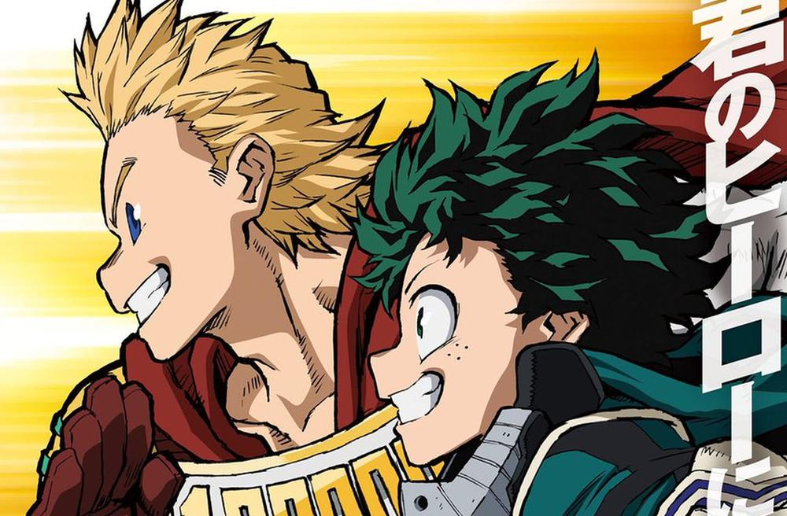

Nacimiento del primer ser con Don
El primer Don detectado fue en un bebé que nació en Quig Quig, China denominado un bebé brillante. Hasta ahora no se sabe el origen de los Don, pasó de ser algo anormal a que el 80% de la población mundial llegara a poseer una variación en su físico.
En sus inicios, esta gente fue rechazada ocasionando grandes conflictos, pero con el paso del tiempo, la posesión de un Don llego a ser de lo más normal. Posteriormente, ya con el establecimiento de los héroes, algunas familias comenzaron a arreglar matrimonios entre personas con Dones poderosos para que sus hijos nacieran con Dones aún más fuertes o híbridos entre ambos (como es el caso de Todoroki).
Usuarios usando su Don
La Policía, manteniendo el liderazgo y el protocolo, decidió no incluir a los usuarios de Dones en sus filas por temor a que los reclutas usaran sus poderes como armas. Después que los Dones comenzaran a aparecer, todos en el mundo querían ser héroes; usuarios profesionales de Dones con el permiso para luchar contra quienes utilizan sus Dones para el mal. Por lo tanto, el sueño de ser un superhéroe como profesión podrá hacerse realidad. Asimismo, surgieron personas que usaban los Dones como una ventaja para sus actos criminales, y fue a causa de esto que los nombrados héroes comenzaron a surgir, para evitar estas fechorías..
